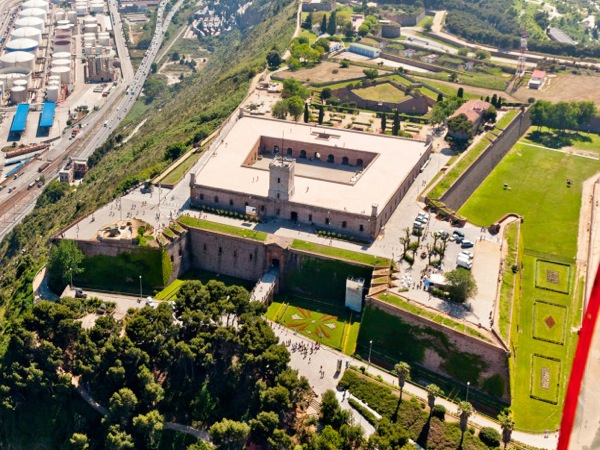
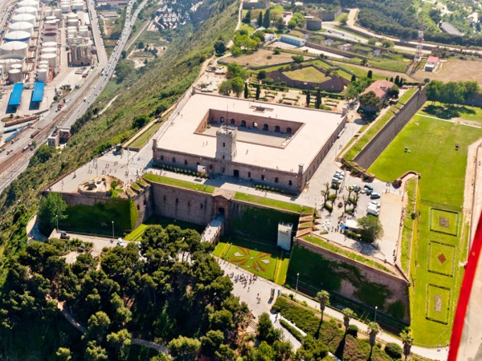
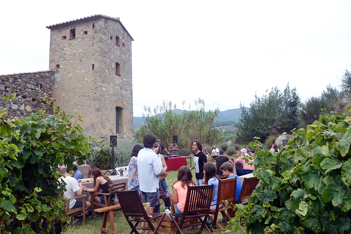

Overview
Texto de introducción al programa
Hotels
Programme
Day 1
Cutting Edge Events staff will welcome the group at Barcelona airport and transfer the group to the chosen hotel.
Once guests will arrive at the hotel, they will leave the luggage and our English speaking assistant will walk them to a restaurant located walking distance from the hotel.
Lunch restaurant options
Afternoon activity
BARCELONA FROM THE AIR
- Duration: 2,5H - 3 hours
- Location: Barcelona cable cars
- Minimum 10 pax - Máximum 100 pax
- Included: 1 English speaking guide, a 30 seater coach at disposal for the activity, tickets for the 2 cable cars.
The bus will go trough the port area to Montjuic and the Olympic area seeing Palau Sant Jordi and the stadium, then they will stop at the Grey Cable car station. This Cable car will transfer guests to the Castle. Our guide will explain guests the history of all the area and the castle. From there they will walk to Miramar where they will find the Red Cable Car. This is the oldest cable car of the city and it offers a great panoramic view of the city - a unique experience - Each cable car is up to 18 pax - this cable car can’t be booked in advance or privatized. The Red Cable Car ends at the Old Port (is the same tower as the restaurant Torre de Alta Mar). Once everyone will be at Port Station they will be picked up by the bus that will transfer them to the hotel.
 


Dinner near the sea
After some free time to refresh, guests will enjoy their first evening in the city.
Restaurante Barceloneta
- Location: Old Harbour
- Cuisine Fish and rice dishes, Catalan Cuisine
Located just next to the yatch marina, this is a beautifull restaurant specialized in fish and rice dishes. Their food is elaborated with fresh, high quality ingredients. It has a big terrace and different dining rooms.
You can see it as if you were there with this virtual tour:
DAY 2
e.bike tour from Barcelona to Alella
On the second day we suggest an e-bike tour along the coastline of barcelona finishing at Boquet D’Alella winery, a familiar winery located in Alella, small town 15km from Barcelona. Guests will put their luggage in the e.bikes truck, as they will bring it out to the winery later. Once they have finished with the activity, a bus will come to the winery to pick up the group and take them to the airport.
- Location Barcelona - Alella
- Duration 5 hours aprox
- Capacity Minimum 8pax - maximum 50pax
- Included E-bike tour, guided visit, wine tasting, picnic lunch at winery and bus transfer to the airport .
When the group arrives to Alella, they will visit this small and familiar winery. They will enjoy of the views of Alella, which is a really small town but with a good living atmosphere. after the visit they will finish the acitvity having a picnic lunch outside (if weather allows us)!

END OF THE PROGRAMME
Terms & Conditions
Rates valid for ………
Net rates for ………..
For a group of minimum X pax.
Cutting Edge Events management fee including in the detailed rates
VAT included.
No reservation has been done. Availability upon request.